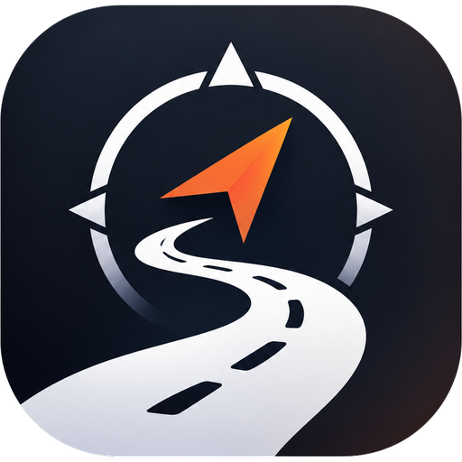

NAVSTAThis policy explains what the Navsta mobile app ("Navsta", "we") collects, why, who it is shared with, and the choices you have. Navsta is a companion app for group motorcycle rides.
| What | When | Why |
|---|---|---|
| Name, email address and profile picture | When you sign in with Google or with an email link | To create your account and show your name to riders in trips you join |
| Bike model and phone number (optional) | If you add them to your profile | Shown to members of trips you join, so they can recognise and call you |
| Trips, stops, routes, checklists and invite codes | When you plan or join a ride | To run the trip for its members |
| Precise location, heading and speed | Only while you have turned on location sharing during an active ride | To show your position to members of that ride and compute distance and ETA |
| SOS and breakdown alerts, with your location at that moment | When you raise one | To alert the members of your ride and record who responded |
| Expenses, payments and fuel logs | When you add them | To split costs between trip members and estimate fuel range |
| Emergency contacts | If you add them | So you can call or text them from the SOS screen. They are visible only to you. |
Navsta uses your device's precise location only while you share it during an active ride. While sharing on Android a persistent notification is shown, and you can stop at any time. Your position is sent to members of that ride and only your latest position is stored — not a history of where you have been. Stored positions are deleted when the ride is completed. We do not use your location for advertising and we do not sell it.
If you sign in with Google, we receive your name, email address and profile picture from your Google Account (the openid, email and profile scopes). We use them only to create and identify your Navsta account. Navsta's use and transfer of information received from Google APIs adheres to the Google API Services User Data Policy, including the Limited Use requirements.
We do not sell personal information and we do not use it for advertising.
Account and trip data is kept while your account exists. Live positions are deleted when a ride ends. You can delete your account at any time in the app (Profile → Delete account). This deletes your profile, emergency contacts, location data and memberships, and your own trip records; shared trips you own are handed to another member so the group keeps its plan. You can also ask us to delete your data by emailing sidrcx@gmail.com.
Data is encrypted in transit. Access is restricted at the database level so that only members of a trip can read that trip's data, and only you can read your emergency contacts.
Navsta is intended for adults who ride motorcycles and is not directed at children under 13. If you believe a child has created an account, contact us and we will delete it.
If we change this policy we will update the effective date above, and for significant changes we will notify you in the app.
Questions or requests: sidrcx@gmail.com